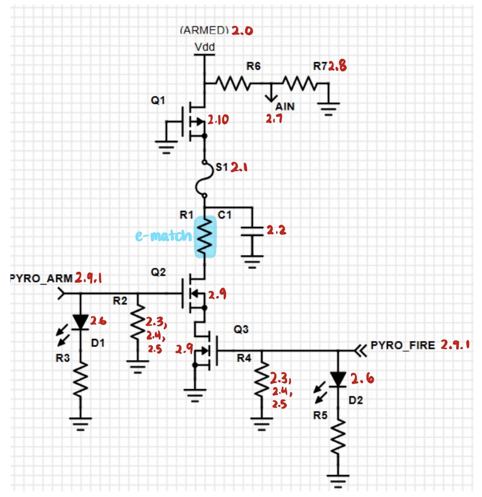
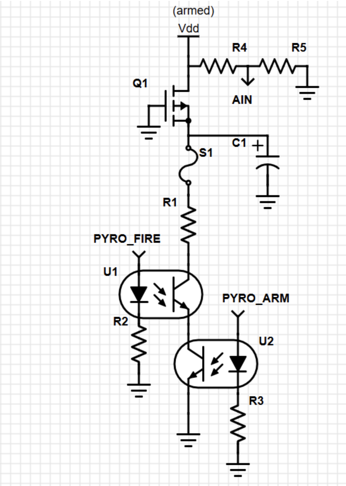
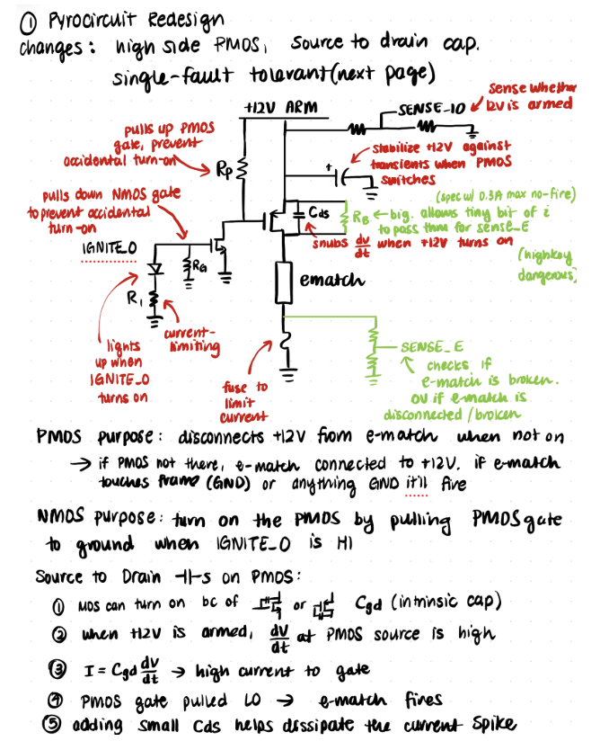
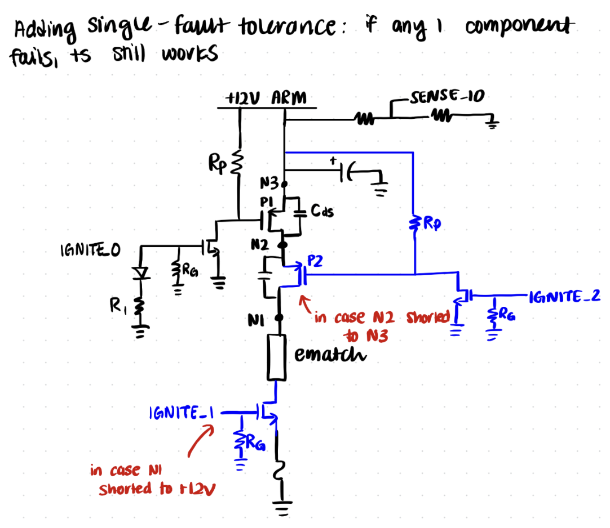
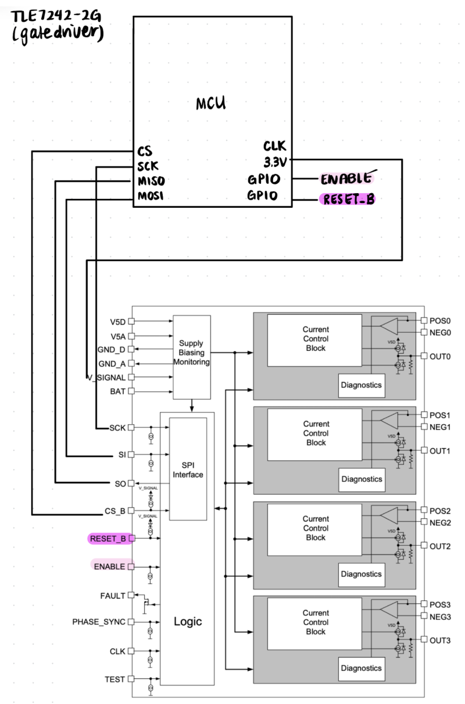

Stanford Student Space Initiative
Project Description
Our team is building a solid motor rocket that reaches 30,000 ft apogee for the 2026 IREC competition with a custom flight computer and airbrakes.
Pyrocircuit
The pyrocircuit takes a digital input signal from the MCU on the flight computer in order to light an e-match and deploy the main and drogue parachutes.
At first, I experimented with an analog pyrocircuit using an NMOS switch, which would allow the required 1A current to flow through the e-match as soon as the MCU pin goes from low to high.
I iterated through multiple designs, each with their own merits, such as least number of components, single-fault tolerant, and double-fault tolerant. In all designs, I included a voltage divider that senses when the IGNITE signal is sent from the MCU and if the e-match is connected.

- 2.0 The system shall require a physical arming switch to be in the "ARM" position to enable pyro channel outputs.
- 2.1 The high-power input from the flight battery shall be protected from overcurrent or short-circuit events by a user-serviceable fuse.
- 2.2 The power rail shall include bulk capacitance to supply high-transient current demands during ignition and maintain voltage stability.
- 2.3 Default Safe State: The pyro channel shall default to a safe (OFF) state if the logic input is disconnected, floating, or in a high-impedance state (e.g., during flight computer boot-up).
- 2.4 Flight Computer Protection: The circuit's logic input shall be high-impedance (e.g., a MOSFET gate) to avoid drawing significant current from the flight computer's GPIO pin.
- 2.5 The logic input shall include filtering to reject high-frequency noise transients.
- 2.6 The system shall provide a visual indicator (e.g., an LED) that illuminates when the flight computer provides the logic-high signal.
- 2.7 The system shall provide a logic-level feedback signal to the flight computer, indicating that the armed rail is active.
- 2.8 Any sense-lines connected to the high-voltage rail shall be scaled to be within the safe input voltage tolerance of the flight computer's GPIO pins.
- 2.9 The pyro channel shall be controlled by two independent, series-switched solid-state devices (e.g., MOSFETs).
- 2.9.1 These two switches shall be controlled by separate, independent logic signals from the flight computer to protect against a single-point software or hardware failure.
- 2.10 The system shall be protected from damage or inadvertent operation in the event of a reverse-polarity connection of the main flight battery.

Testing
I breadboarded the first version of the pyrocircuit and it lit the e-match with a 3.3V signal from an Arduino (after using a voltage divider), but there were many things I didn't consider which could cause the circuit to fail.
Considerations
- System power-up (connecting the main battery) will not induce a current exceeding the 0.3 A no-fire threshold. Sometimes the power supply turning on can turn on the NMOS through its Miller capacitance — can be solved using a high-side PMOS.
- High-impedance/floating states on the MCU GPIO pins during initialization or reset will not trigger the firing sequence.
- Single-Fault Tolerance: The circuit must remain open and safe if any single component fails.
- Two-Fault Tolerance: The system requires at least two independent actions to fire. Use an arming switch for the power and another signal for switching the main MOSFET.
- The circuit must be able to continuously sense e-match continuity without exceeding the no-fire current.
- No-Fire Limit: Transient or diagnostic currents through the pyro must remain strictly < 0.3 A under all non-deployment conditions.
- All-Fire Requirement: Upon receiving the authorized MCU deployment signal, the circuit must reliably source and sustain > 1 A to the load.
- Battery Sag: The battery voltage drops temporarily and causes the MCU to reset or the gate drivers to enter an undefined state where they partially turn on the MOSFETs. The driver current must be < 0.3 A.


Pivot
Instead of including so many components on the custom PCB, I decided it would be easier to spec and order an automotive squib driver, which takes into account many of these considerations. I'm currently speccing for an SPI squib driver which takes SPI signals from the MCU instead of just one or two digital signals from GPIO pins. This makes the circuit double-fault tolerant since it wouldn't fire the circuit even if a single or two pins get stuck high on accident.
We have to solder a few components (capacitors, pull-down resistors) with the squib driver but overall the circuit would be a lot easier to deal with.

More Testing
In progress!
Unscented Kalman Filter
I'm currently working on a UKF in Python to fuse all the sensor data (IMU, barometer, GPS, high-G accelerometer) and estimate the rocket's state so we know when to deploy the airbrakes.
Since the sensor rates are different, I'm using the slower sensor datapoint from the previous reading with all of the new faster sensor readings while waiting for the new slower sensor datapoint.
Check back for more progress!